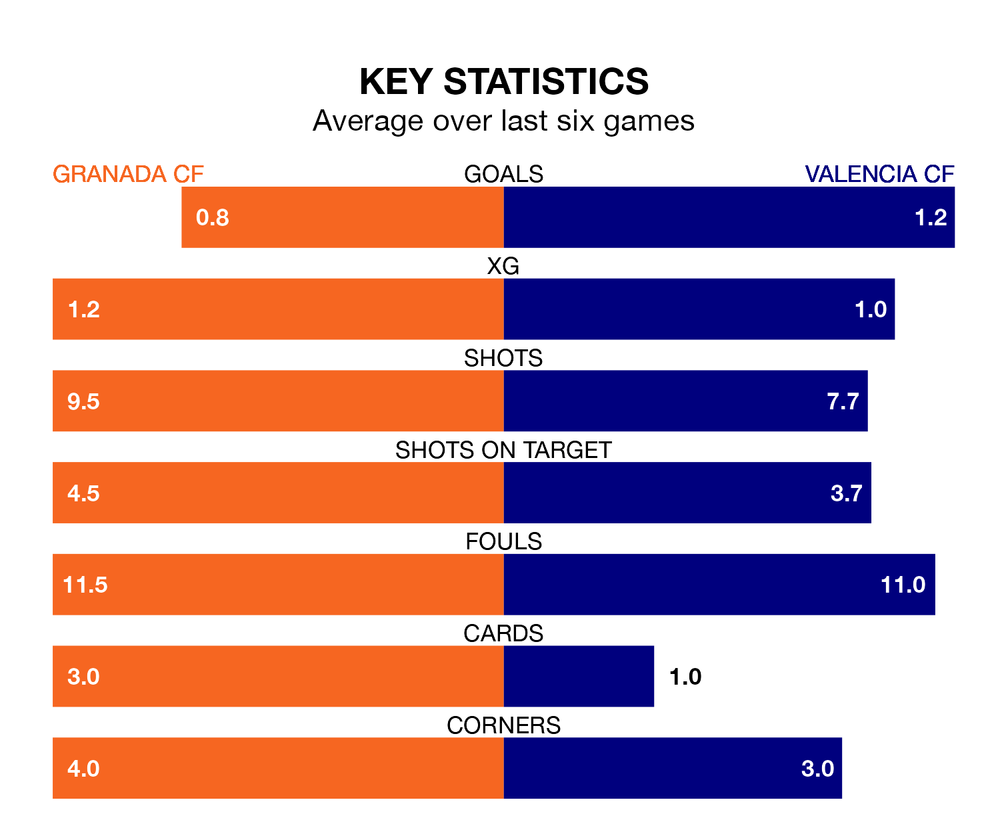

Granada CF face Valencia CF at the Estadio Nuevo Los Cármenes on Saturday lunchtime looking to secure a first win in seven La Liga games.
Granada have lost three and drawn three matches since they last earned three points – against Cádiz on January 3.
They face a Valencia side who have won three and drawn one over that time.
Granada are 19th in the table after 25 games, of which they have won two and drawn eight, earning 14 points.
Valencia are 11 places ahead of the hosts in eighth, with 10 wins and six draws putting them on 36 points.
In the last 10 years, Granada and Valencia have played each other on 16 occasions. Granada won two of them, Valencia 10, and they drew four times.
On average, Granada scored 0.8 goals and Valencia 2.0 in those matches.
Their last meeting was on November 5, when Valencia won 1-0 at home.
With 27 goals in 25 games so far this season, Granada are scoring at below the league average rate with 1.1 goals per game. And they are conceding more than average, letting in 49 goals at a rate of 2.0 per game.
The away team are also below average scorers, with 1.2 goals per game, compared to a league average of 1.3. They have also conceded 1.2 goals per game.
With Giorgi Mamardashvili between the sticks, Valencia can rely on one of the league's safest pair of hands. He has kept eight clean sheets in his 25 appearances this season in La Liga.
In Granada's net, Augusto Martín Batalla Barga has one clean sheet in seven games. He has conceded a goal every 70 minutes, 20% more often than the 87 minutes between goals for Mamardashvili.
Granada's last match was on Sunday, a 1-1 draw against Almería, with Myrto Uzuni getting the goal for Granada.
Valencia drew 0-0 with Sevilla last time out, on Saturday.
Updated: 12:18 (UTC), 19/02/24